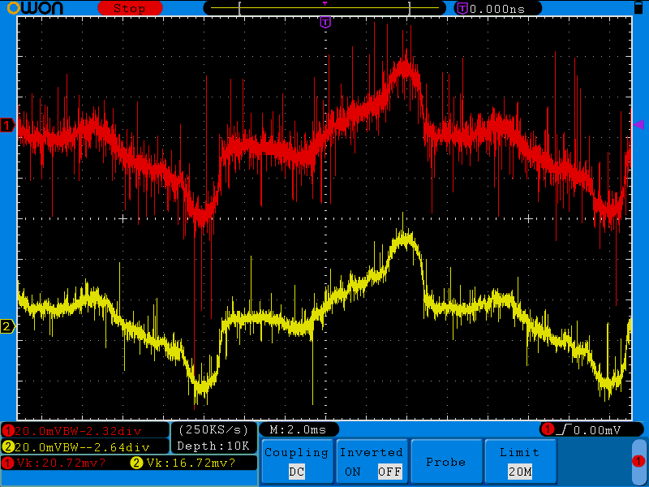

I'm wondering if there has been any consideration given to putting more CT ports on one emonTx. I've been wanting to do fairly fine grained energy monitoring, which basically boils down to monitoring each of the circuits in my home. Unfortunately with 25 circuits that I'd like to monitor having 6 emonTx units is extremely cost prohibitive.
Is there a reason that there can only be 4?
Re: More CTs on one emonTx
"Is there a reason that there can only be 4?"
Yes, that is the number of analogue inputs available on the Atmel328P (when voltage & temperature sensor are counted too).
Some members have used more powerful processors in the Arduino range and built their own front ends based on the emonTx design to give many more inputs. Here's one: http://boredomprojects.net/index.php/projects/home-energy-monitor If you search the forums, you'll probably find more.
Re: More CTs on one emonTx
That 10-channel sensor project is only monitoring one channel at a time, so the coverage of its world is very sparse. With the more powerful processor, it should surely be possible to monitor all those channels in parallel. Using the standard 328P processor, my 'continous monitoring' code can monitor all six analogue channels simultaneously.
Re: More CTs on one emonTx
I think it comes down to how you define "simultaneously". The only way you can truly monitor them simultaeously is to have a dedicated ADC for each current and voltage channel (as found in energy ICs). If you've got a single ADC with a MUX in front of it, then you're only ever looking at a CT for 1/Nth of the time, where N is the number of channels you're trying to monitor.
The AVR based Atmel devices take about 110usecs per conversion. The SAM based Atmels (as found in the Due) take about 1usec per conversion, and most of them have two ADCs so you can genuinely monitor two channels simultaneously (although I doubt the Arduino Due gives access to both ADCs, I've not checked).
Whether any of this matters ultimately comes down to how accurate you need your measurements to be. I think if you want to capture the high harmonics in the signals, you need a decent sample rate, and truly continuous monitoring. The instant you change the MUX to look at a different channel, you've no idea what's happening on the other channel(s). It's not as if those events are getting nicely averaged into the next sample for that channel. 5/6ths of the stuff happening on each of your CTs is going totally unobserved.
Re: More CTs on one emonTx
The instant you change the MUX to look at a different channel, you've no idea what's happening on the other channel(s).
Fair point, my use of the term "simultaneous" was poor. The point I'm getting at, of course, is that this 10-channel project is simply an extension of the original "discrete monitoring" scheme. Although each channel is repeatedly measured with great accuracy over a short duration, it is then ignored for the remainder of each 2-second reporting period. That approach has severe limitations.
By using the ADC's Mux in a smarter way, each channel can be sampled at a steady rate of several tens of samples per mains cycle. This is sufficient to "continuously" record power at the fundamental mains frequency of 50/60 Hz, and many of the lower harmonics.
The term "continuous monitoring" has often been used to describe my code. A better description might be "code in which the sampling sequence for each channel is continuous".
Re: More CTs on one emonTx
So what corner frequency do you use for your anti-aliasing filters? Do you tweak that filter based on your expected/measured sampling rate?
Re: More CTs on one emonTx
The ADC cycles around each of the required inputs at its maximum (free-running) rate. At 104 us per conversion, I see approx 32 x 6-sample sets per 50 Hz mains cycle for my 3-phase PCB, or 38 x 5-sample sets for the emonTx V3.
This arrangement seems fine for calculating real power as the supply meter does. For more discerning applications, additional precautions may indeed be needed.
Re: More CTs on one emonTx
There generally is not much harmonic content above 12 (and in the EU at least, there are strict limits on injected harmonics - for most equipment it's 210 mA at 13th and less above), so aliasing isn't a problem in most cases, as the sampling frequency is well above the highest significant harmonic.
Re: More CTs on one emonTx
Thanks, Robert, I'm glad to hear your official endorsement of what most of us just take for granted!
I generally try to sample the V and I signals as fast as possible. It continues to amaze me how fast the Atmel 328P processor will run. For my "continuous monitoring" code with its integer maths, the ADC is running at full speed and the occupancy of the main processor is generally around 65%.
Re: More CTs on one emonTx
Well I can't claim to have looked at them all, but I can almost guarantee your digital revenue meter will have an anti-aliasing filter on both V and I, and their sampling rates are way way faster than yours. Typical ballpark figures there are a corner frequency of about 5 to 10kHz, and a 40 dB attenuation at 512kHz. I guess they're designed to work reliably in very harmonic-hostile environments, or maybe their goal is to keep other noise out. That you can match their performance without the filter is pretty good evidence that they're not achieving much.
Re: More CTs on one emonTx
I wouldn't wish to claim that my DIY systems are as accurate as the Ampy meter in our garage, but they do generally seem to be in alignment. Most supply meters have an anti-creep setting, so if less than around 10 Watts is being drawn, they will soon go into an idle mode where no further consumption is recorded.
I wonder whether anyone has checked the effect of including an anti-alias filter on the kind of power measurement systems that most of us are using?
Re: More CTs on one emonTx
Well apart from you diverting folk, most of us don't get our meter into the anti-creep zone (except on those rare occasions where the PV output naturally matches the house load). A large part of what my meter counts is the background load which is about 130W with a PF of about 0.75 and some nasty looking distortions in the current signal. There are about as many VARs in the Distortion Power as there are Watts in the Real Power. I suspect it's when you're trying to measure stuff like that, that some of this stuff starts to matter.
Even when the PV output does balance the house nicely, there's still a quite a bit of current flowing. My inverter is happy to provide the Real Power, but leaves the grid to provide the Distortion Power. In that case, PF approaches 0.
Re: More CTs on one emonTx
The more I think about the anti-aliasing filter, the more convinced I am that it's not trying to filter out the extremely high harmonics in the current signal (as Robert points out, there shouldn't be any if everyone is playing by the rules) but rather is trying to filter out all the noise picked up by the CT and leads.
The attached is one of my ugliest loads from a harmonic point of view. In terms of the above dials it would display as:
Real: 207.6W, React: -7.5VAR, Dist: 134VAR, PF: 0.84, Volts: 252, Current: 0.98A
The red trace below is the signal right at the CT screw terminals, and the yellow trace is after it's been through the anti-aliasing filter. You can see it's done a pretty good job at clearing up all the furry bits, but left the signal otherwise unscathed.
Assuming you have similar noise on your inputs, I suspect your conversions would benefit from removing the aliasing caused by all that high frequency stuff, all for the price of a cap and a resistor per channel. Given your very low sample rate you'd probably want to attenuate much lower frequencies than I do. I sample each channel at 1MHz, so want to clamp down hard on anything above 512KHz.

Re: More CTs on one emonTx
@dbc
take a look at:
http://www.analog.com/static/imported-files/data_sheets/ADE7854A_7858A_7...
page 28 , figure 32.
same sample rate 1024 khz.
Re: More CTs on one emonTx
Yeh, I think all the ADE devices use that same sigma-delta DAC. Of course it's a bit misleading to directly compare that sampling rate with calypso_rae's quoted rates above. He gets 10 bits of information every 104 usecs or 10 bits every 624 usecs per channel. We get 1 bit every usec per channel, which then gets oversampled into a 24-bit value. That results in 2kHz worth of bandwidth (so good to the 40th harmonic assuming 50Hz) and a dynamic range of 1000:1.
But it's that 1024 Kbps rate that you take into consideration when sizing your anti-aliasing filter, which I noticed the other day you'd included on all your inputs. So you too should see similar high frequency rejection like in the scope traces above.
Re: More CTs on one emonTx
@dbc
"My" design is working now, not that i did anything special from my side,
just bought the component followed the app-note and wrote the software
layout of pcb and doing the software was my input.
works good now.
together with the RPIb+ its a really tiny bundle.
Running wlan and just put it into plastic housing.
I log all samples once a minute into an mysql database and the do actions from other devises depending on result in database. (turning of heaters etc to balance phases and avoid overloads)
Also draws curves from database with other software.
It was a nice little project and fun but now i need to continue on other works on my house.
I upload the software later, I2C, ADE7878 are 2 separate shared libraries, and main program just as normal.
C++ on raspbian.
[Moderator's note:
It is my opinion that your design is very dangerous if not illegal within the EU. You need to consider what happens if the neutral becomes disconnected between the unit and the supply. If that happens, the entire unit and anything and everything connected to it could become live to the full line voltage. RW.]
Re: More CTs on one emonTx
I hope you improved that 415V spacing. Here's a demo of what can happen once the arc starts:
https://www.youtube.com/watch?v=-iClXrd50Z8
Now I risk blowing a whole morning watching youtube videos, but my favourite is what happens when you open a loaded 500kV line:
https://www.youtube.com/watch?v=vqgNrj6oEdc
Re: More CTs on one emonTx
I think an arc chute might have helped there
Try a dc circuit breaker carrying 8 kA. (Sorry, it was early 1980's, no video.)
Re: More CTs on one emonTx
Try a dc circuit breaker carrying 8 kA. (Sorry, it was early 1980's, no video.)
Having teased us with that, I think you need to replicate it and film it ;-).
Re: More CTs on one emonTx
It was a winder for a coal mine, and there are no deep mines in the UK any more. It was a 4000 HP (2957 kW) dc motor, the breaker was in the armature circuit. 800 V at top speed (47.75 rpm, direct coupled to the winding drum), just under 4 kA average current, 8 kA accelerating the load (10 tons of coal in the skip coming up, 2 x 10 tons of skip, plus the 24 ft diameter drum, and 4500 ft of winding rope). The dc came from a 12/24 pulse thyristor converter, 5 hockey-puck thyristors in parallel, 120 in total.
Oh, and it got its power from the colliery ring main - 3 phase at 11 kV.
Re: More CTs on one emonTx
Now I risk blowing a whole morning watching youtube videos, but my favourite is what happens when you open a loaded 500kV line:
Old thread, but that's one of my favorites too.
Here's some more: http://teslamania.delete.org/frames/longarc.htm